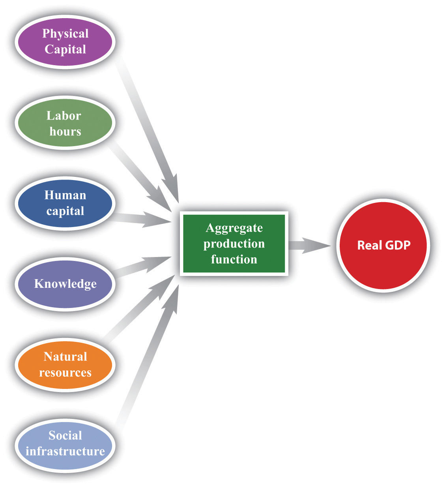
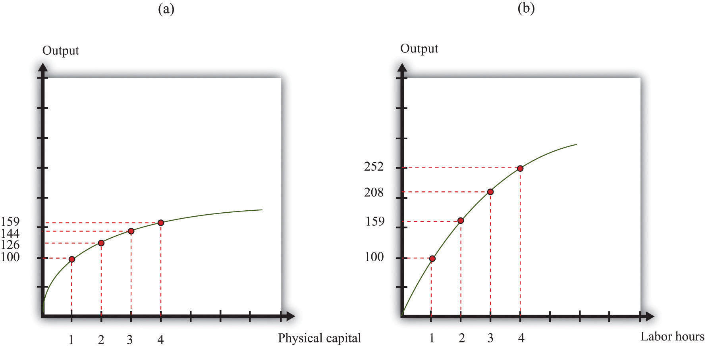
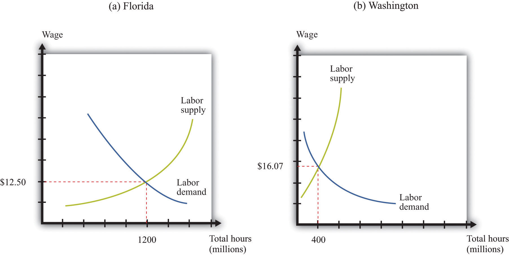
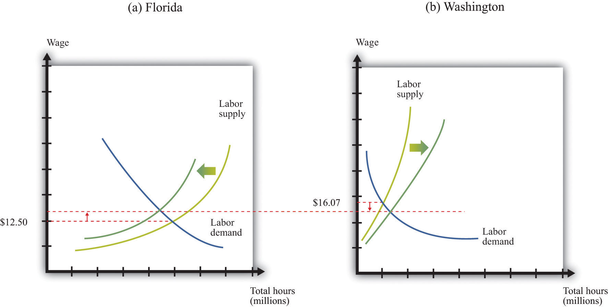
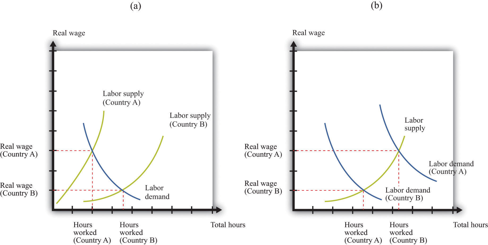
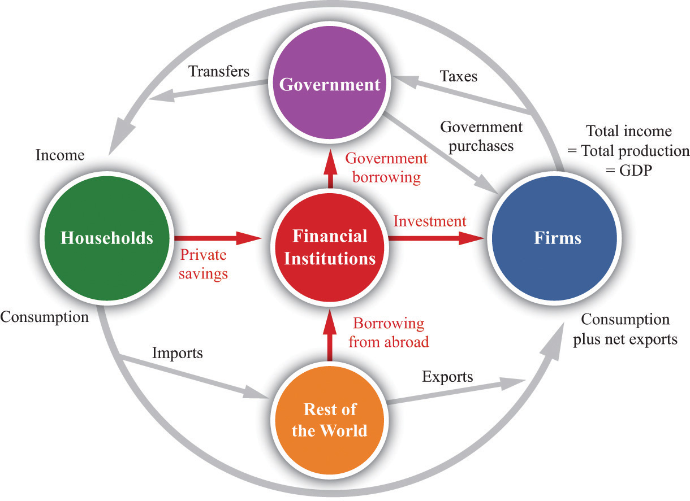
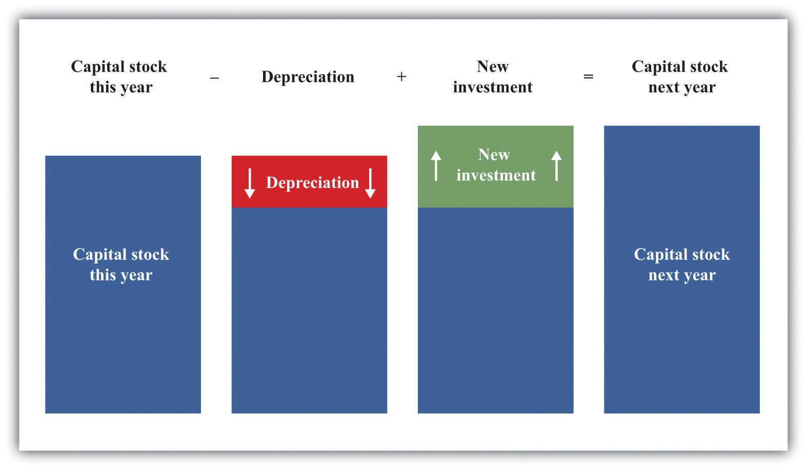
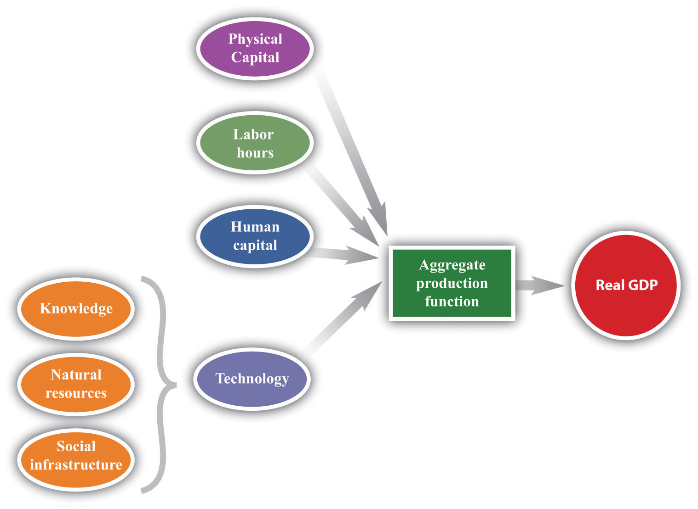
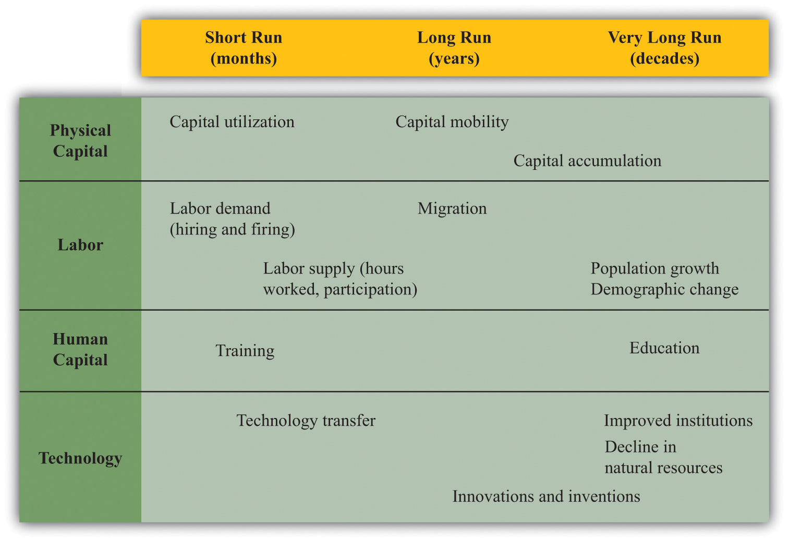

We begin this chapter with five stories from around the world.
The following is a BBC report on Polish immigration to the United Kingdom.
If there was ever any doubt that the UK is in the grips of an extraordinary revolution, then hunt out the migrant worker recruitment fairs that are starting to spring up.
Last month, thousands of young Polish workers turned up at the third recruitment fair hosted by Polish Express, the London-based newspaper for the diaspora, […]
As they queued to enter the hall that was filled to its legal safety capacity, they scribbled away at resumes, going over their pitch time and time again.
Most were in their mid-20s. Some had only recently arrived, having stuffed a few belongings into a backpack, bought a one-way no-frills airline ticket. […]
[A] willingness to do jobs that employers say British workers don’t want, was at the heart of the boom, said Bob Owen of Polcat, a Doncaster safety training firm targeting the Polish employees market.
“I must admit it, I have never seen a workforce like the Poles,” said Mr Owen. “They want to work, you can see it in their eyes. But here’s the thing—they’re not in competition with the British workforce—they are finding ways of fulfilling a need that just wasn’t being met and that’s why they are being welcomed.”
[…]See Dominic Casiani, “So You’re Polish and You Want a Job,” BBC News, September 25, 2006, accessed June 28, 2011, http://news.bbc.co.uk/1/hi/uk/5376602.stm.
Figure 20.1 is a screenshot from a Dubai government website that promotes business and tourism in Dubai.See “Dubai for Business,” Government of Dubai: Department of Tourism and Commerce Marketing, accessed July 27, 2011, http://www.dubaitourism.ae/definitely-dubai/dubai-business. It details many different ways in which Dubai is a desirable place for businesses to locate. For example, the website contains the following:
Figure 20.1
Dubai offers incoming business all the advantages of a highly developed economy. Its infrastructure and services match the highest international standards, facilitating efficiency, quality, and service. Among the benefits are:
The website goes on to talk about benefits such as the absence of corporate or income taxes, the absence of trade barriers, competitive labor and energy costs, and so on.
The following is an extract from the Taipei Times, April 9, 2007.
Compal Electronics Inc, the world’s second-largest laptop contract computer maker, is considering building a new factory in Vietnam.
Compal could join the growing number of Taiwanese electronic companies investing in Vietnam—such as component maker Hon Hai Precision Industry Co—in pursuit of more cost-effective manufacturing sites outside China.
[…]
Compal forecast last month that its shipments of notebook computers would expand around 38 percent to 20 million units this year, from 14.5 million units last year. The company currently makes 24 million computers a year at its factories in Kunshan, China.
Compal, which supplies computers to Dell Inc and other big brands, could lack the capacity to match customers’ demand next year if its shipments increase any faster,…
Lower wages and better preferential tax breaks promised by the Vietnamese government could be prime factors for choosing Vietnam, Compal chairman Rock Hsu said earlier this year.
[…]See “Compal Eyes Vietnam for Factory, Taipei Times, April 9, 2007, accessed June 28, 2011, http://www.taipeitimes.com/News/biz/print/2007/04/09/2003355949. We have corrected a minor grammatical error in the article.
In Niger, West Africa, the World Bank is funding a $300 million project to improve education: “The Basic Education Project for Niger’s objectives are: (i) to increase enrollment and completion in basic education programs and (ii) to improve management at all levels by improving the use of existing resources, focusing on rural areas to achieve greater equity and poverty reduction in the medium to long term.”For more details, see World Bank, “Basic Education Project” World Bank, accessed June 28, 2011, http://web.worldbank.org/external/projects/main?page PK=64283627&piPK=73230&theSitePK=40941&menuPK=228424&Projectid=P061209. The World Bank website explains that the goals of the project are to improve access to primary education (including adult literacy), improve the quality of primary and secondary education, and improve the management capability of the Ministry of Education.
President Obama recently established the President’s Council on Jobs and Competitiveness, which is charged, among other things, with reporting “directly to the President on the design, implementation, and evaluation of policies to promote the growth of the American economy, enhance the skills and education of Americans, maintain a stable and sound financial and banking system, create stable jobs for American workers, and improve the long term prosperity and competitiveness of the American people.”See “President’s Council on Jobs and Competitiveness: About the Council,” accessed July 27, 2011, http://www.whitehouse.gov/administration/advisory-boards/jobs-council/about. In his concern with competitiveness, President Obama follows directly in the footsteps of President George W. Bush, who, in 2006, established the American Competitiveness Initiative to Encourage American Innovation and Strengthen Our Nation’s Ability to Compete in the Global Economy.George W. Bush, “State of the Union: American Competitiveness Initiative,” White House Office of Communications, January 31, 2006, accessed June 28, 2011, http://www2.ed.gov/about/inits/ed/competitiveness/sou-competitiveness.pdf.
At first reading, these five stories seem to have little to do with each other. There is no obvious connection between the actions of the World Bank in Niger and Taiwanese computer manufacturers in Vietnam or between the marketing of Dubai and the arrival of Polish migrants in the United Kingdom. Yet they are indeed all connected. Think for a moment about the consequences of the following:
Of course, each story has many different implications. But they have something fundamental in common: every single one of them will increase the real gross domestic product (real GDP) of the country in question. They all therefore shed light on one of the most fundamental questions in macroeconomics:
What determines a country’s real GDP?
As we tackle this question, we will see that it is indeed connected to our stories of Dubai, the United Kingdom, Niger, Vietnam, and the United States.
Our stories have something else in common as well. In each case, they concern not only the country in isolation but also how it interacts with the rest of the world. The funds for Niger’s education program are coming from other countries (via the World Bank). The US policy is designed to ensure that America is “leading the global competition that will determine our success in the 21st century.”“Obama Presses for an Economy in ‘Overdrive’: Will Jobs Soon Follow?,” PBS NewsHour, January 21, 2011, accessed August 22, 2011, http://www.pbs.org/newshour/bb/business/jan-june11/obamabusiness_01-21.html. Dubai is trying to attract investment from other countries. The workers in the United Kingdom are coming from Poland. The factory in Vietnam is being built so that a Taiwanese company can supply other manufacturers throughout the world.
Real GDP is the broadest measure that we have of the amount of economic activity in an economy. In this chapter, we investigate the supply of real GDP in an economy. Firms in an economy create goods and services by transforming inputs into outputs. For example, think about the manufacture of a pizza. It begins with a recipe—a set of instructions. A chef following this recipe might require 30 minutes of labor time to make the dough and assemble the toppings and then might need 15 minutes use of a pizza oven to cook the pizza. The inputs here are as follows: the pizza oven, the labor time, the skills of the chef, and the recipe. Given 15 minutes of capital time, 30 minutes of labor time, a skilled chef, and the instructions, we can make one pizza.
In macroeconomics, we work with the analogous idea that explains how the total production in an economy depends on the available inputs. We first explain the relationship between the available inputs in the economy and the amount of real GDP that the economy can produce. Then we look at all the individual inputs in turn. If we can explain what determines the amount of each input in an economy and if we know the link from inputs to real GDP, then we can determine the level of real GDP. Finally, we look at a technique that allows us to quantify the relationship between inputs and output. Specifically, we look at how increases in different inputs translate into increases in overall GDP. Using this technique, we can see which inputs are particularly important.
After you have read this section, you should be able to answer the following questions:
Economists analyze production in an economy by analogy to the production of output by a firm. Just as a firm takes inputs and transforms them into output, so also does the economy as a whole. We summarize the production capabilities of an economy with an aggregate production functionA combination of an economy’s physical capital stock, labor hours, human capital, knowledge, natural resources, and social infrastructure that produces output (real GDP)..
Physical capitalThe total amount of machines and production facilities used in production. refers to goods—such as factory buildings, machinery, and 18-wheel trucks—that have two essential features. First, capital goods are used in the production of other goods. The production of physical capital does not increase our well-being in and of itself. It allows us to produce more goods in the future, which permits us to enjoy more consumption at some future date. Second, capital goods are long lasting, which means we accumulate a capital stock over time. Capital goods are thus distinct from intermediate goods, which are fully used up in the production process.
The capital stockThe total amount of physical capital in an economy. of an economy is the total amount of physical capital in the economy. As well as factories and machines, the capital stock includes physical infrastructure—road networks, airports, telecommunications networks, and the like. These are capital goods that are available for multiple firms to use. Sometimes these goods are supplied by governments (roads, for example); sometimes they are provided by private firms (cellular telephone networks are an example). For brevity, we often simply refer to “capital” rather than “physical capital.” When you see the word capital appearing on its own in this book you should always understand it to mean physical capital.
Labor hoursThe total hours worked in an economy, measured as the number of people employed times the average hours they work. are the total number of hours worked in an economy. This depends on the size of the workforce and on how many hours are worked by each individual.We use the term workforce rather than labor force deliberately because the term labor force has a precise definition—those who are unemployed as well as those who are working. We want to include only those who are working because they are the ones supplying the labor hours that go into the production function. Chapter 23 "Jobs in the Macroeconomy" discusses this distinction in more detail.
Human capitalThe skills and knowledge that are embodied within workers. is the term that economists use for the skills and training of an economy’s workforce. It includes both formal education and on-the-job training. It likewise includes technical skills, such as those of a plumber, an electrician, or a software designer, and managerial skills, such as leadership and people management.
KnowledgeThe blueprints that describe a production process. is the information that is contained in books, software, or blueprints. It encompasses basic mathematics, such as calculus and the Pythagorean theorem, as well as more specific pieces of knowledge, such as the map of the human genome, the formula for Coca-Cola, or the instructions for building a space shuttle.
Natural resourcesOil, coal, and other mineral deposits; agricultural and forest lands; and other resources used in the production process. include land; oil and coal reserves; and other valuable resources, such as precious metals.
Toolkit: Section 31.26 "The Aggregate Production Function"
The aggregate production function describes how aggregate output (real gross domestic product [real GDP]A measure of production that has been corrected for any changes in overall prices.) in an economy depends on available inputs. The most important inputs are as follows:
Output increases whenever there is an increase in one of these inputs, all else being the same.
Social infrastructureThe general business climate, including any relevant features of the culture. refers to the legal, political, social, and cultural frameworks that exist in an economy. An economy with good social infrastructure is relatively free of corruption, has a functional and reliable legal system, and so on. Also included in social infrastructure are any relevant cultural variables. For example, it is sometimes argued that some societies are—for whatever reason—more entrepreneurial than others. As another example, the number of different languages that are spoken in a country influences GDP.
We show the production function schematically in Figure 20.2 "The Aggregate Production Function".
Figure 20.2 The Aggregate Production Function
The aggregate production function combines an economy’s physical capital stock, labor hours, human capital, knowledge, natural resources, and social infrastructure to produce output (real GDP).
The idea of the production function is simple: if we put more in, we get more out.
We call the extra output that we get from one more unit of an input, holding all other inputs fixed, the marginal productThe extra output obtained from one more unit of an input, holding all other inputs fixed. of that input. For example, the extra output we obtain from one more unit of capital is the marginal product of capitalThe extra output obtained from one more unit of capital., the extra output we get from one more unit of labor is the marginal product of laborThe amount of extra output produced from one extra hour of labor input., and so on.
Physical capital and labor hours are relatively straightforward to understand and measure. To measure labor hours, we simply count the number of workers and the number of hours worked by an average worker. Output increases if we have more workers or if they work longer hours. For simplicity, we imagine that all workers are identical. Aggregate differences in the type and the quality of labor are captured in our human capital variable. For physical capital, we similarly imagine that there are a number of identical machines (pizza ovens). Then, just as we measure labor as the number of worker hours, so also we could measure capital by the total number of machine hours.If this were literally true, we could measure capital stock by simply counting the number of machines in an economy. In reality, however, the measurement of capital stock is trickier. Researchers must add together the value of all the different pieces of capital in an economy. In practice, capital stock is usually measured indirectly by looking at the flow of additions to capital stock. We can produce more output by having more machines or by using each machine more intensively.
The other inputs that we listed—human capital, knowledge, social infrastructure, and natural resources—are trickier to define and much harder to quantify. Economists have used measures of educational attainment (e.g., the fraction of the population that completes high school) to compare human capital across countries.We use an index of human capital in Chapter 21 "Global Prosperity and Global Poverty". There are likewise some data that provide some indication of knowledge and social infrastructure—such as spending on research and development (R&D) and survey measures of perceived corruption.
The measurement of natural resources is problematic for different reasons. Land is evidently an input to production: factories must be put somewhere, and agriculture requires fields and orchards, so the value of land can be measured in principle. But what about reserves of oil or underground stocks of coal, uranium, or gold? First, such reserves or stocks contribute to real GDP only if they are extracted from the earth. An untapped oil field is part of a nation’s wealth but makes no contribution to current production. Second, it is very hard to measure such stocks, even in principle. For example, the amount of available oil reserves in an economy depends on mining and drilling technologies. Oil that could not have been extracted two decades ago is now available; it is likely that future advances in drilling techniques will further increase available reserves in the economy.
We simply accept that, as a practical matter, we cannot directly measure an economy’s knowledge, social infrastructure, and natural resources. As we see later in this chapter, however, there is a technique for indirectly measuring the combined influence of these inputs.
One thing might strike you as odd. Our description of production does not include as inputs the raw materials that go into production. The production process for a typical firm takes raw materials and transforms them into something more valuable. For example, a pizza restaurant buys flour, tomatoes, pepperoni, electricity, and so on, and transforms them into pizzas. The aggregate production function measures not the total value of these pizzas but the extra value that is added through the process of production. This equals the value of the pizzas minus the value of the raw materials. We take this approach to avoid double counting and be consistent with the way real GDP is actually measured.Reserves of natural resources are not counted as raw materials. The output of the mining sector is the value of the resources that have been extracted from the earth.
Table 20.1 "A Numerical Example of a Production Function" gives a numerical example of a production function. The first column lists the amount of output that can be produced from the inputs listed in the following columns.
Table 20.1 A Numerical Example of a Production Function
| Row | Output | Capital | Labor | Other Inputs |
|---|---|---|---|---|
| Increasing Capital | ||||
| A | 100 | 1 | 1 | 100 |
| B | 126 | 2 | 1 | 100 |
| C | 144 | 3 | 1 | 100 |
| D | 159 | 4 | 1 | 100 |
| Increasing Labor | ||||
| E | 100 | 1 | 1 | 100 |
| F | 159 | 1 | 2 | 100 |
| G | 208 | 1 | 3 | 100 |
| H | 252 | 1 | 4 | 100 |
| Increasing Other Inputs | ||||
| I | 100 | 1 | 1 | 100 |
| J | 110 | 1 | 1 | 110 |
| K | 120 | 1 | 1 | 120 |
| L | 130 | 1 | 1 | 130 |
If you compare row A and row B of Table 20.1 "A Numerical Example of a Production Function", you can see that an increase in capital (from 1 unit to 2 units) leads to an increase in output (from 100 units to 126 units). Notice that, in these two rows, all other inputs are unchanged. Going from row B to row C, capital increases by another unit, and output increases from 126 to 144. And going from row C to row D, capital increases from 3 to 4 and output increases from 144 to 159. We see that increases in the amount of capital lead to increases in output. In other words, the marginal product of capital is positive.
Similarly, if you compare rows E–H of Table 20.1 "A Numerical Example of a Production Function", you can see that the marginal product of labor is positive. As labor increases from 1 to 4 units, and we hold all other inputs fixed, output increases from 100 to 252 units. Finally, rows I to L show that increases in other inputs, holding fixed the amount of capital and labor, likewise leads to an increase in output.
Figure 20.3 "A Graphical Illustration of the Aggregate Production Function" illustrates the production function from Table 20.1 "A Numerical Example of a Production Function". Part (a) shows what happens when we increase capital, holding all other inputs fixed. That is, it illustrates rows A–D of Table 20.1 "A Numerical Example of a Production Function". Part (b) shows what happens when we increase labor, holding all other inputs fixed. That is, it illustrates rows E–H of Table 20.1 "A Numerical Example of a Production Function".
Figure 20.3 A Graphical Illustration of the Aggregate Production Function
The aggregate production function shows how the amount of output depends on different inputs. Increases in the amount of physical capital (a) or the number of labor hours (b)—all else being the same—lead to increases in output.
You may have noticed another feature of the production function from Figure 20.3 "A Graphical Illustration of the Aggregate Production Function" and Table 20.1 "A Numerical Example of a Production Function". Look at what happens as the amount of capital increases. Output increases, as we already noted—but by smaller and smaller amounts. Going from 1 unit of capital to 2 yields 26 extra units of output (= 126 − 100). Going from 2 to 3 units of capital yields 18 extra units of output (= 144 − 126). And going from 3 to 4 yields 15 extra units of output (= 159 − 144). The same is true of labor: each additional unit of labor yields less and less additional output. Graphically, we can see that the production function becomes more and more flat as we increase either capital or labor. Economists say that the production function we have drawn exhibits diminishing marginal productThe more an input is being used, the less is its marginal product..
The more physical capital we have, the less additional output we obtain from additional physical capital. As we have more and more capital, other things being equal, additions to our capital stock contribute less and less to output. Economists call this idea diminishing marginal product of capitalThe more physical capital that is being used, the less additional output is obtained from additional physical capital..
The more labor we have, the less additional output we obtain from additional labor. Analogously, this is called diminishing marginal product of laborThe more labor that is being used, the less additional output is obtained from additional labor.. As we have more and more labor, we find that additions to our workforce contribute less and less to output.
Diminishing marginal products are a plausible feature for our production function. They are easiest to understand at the level of an individual firm. Suppose you are gradually introducing new state-of-the-art computers into a business. To start, you would want to give these new machines to the people who could get the most benefit from them—perhaps the scientists and engineers who are working in R&D. Then you might want to give computers to those working on production and logistics. These people would see a smaller increase in productivity. After that, you might give them to those working in the accounting department, who would see a still smaller increase in productivity. Only after those people have been equipped with new computers would you want to start supplying secretarial and administrative staff. And you might save the chief executive officer (CEO) until last.
The best order in which to supply people would, of course, depend on the business. The important point is that you should at all times give computers to those who would benefit from them the most in terms of increased productivity. As the technology penetrates the business, there is less and less additional gain from each new computer.
Diminishing marginal product of labor is also plausible. As firms hire more and more labor—holding fixed the amount of capital and other inputs—we expect that each hour of work will yield less in terms of output. Think of a production process—say, the manufacture of pizzas. Imagine that we have a fixed capital stock (a restaurant with a fixed number of pizza ovens). If we have only a few workers, then we get a lot of extra pizza from a little bit of extra work. As we increase the number of workers, however, we start to find that they begin to get in each others’ way. Moreover, we realize that the amount of pizza we can produce is also limited by the number of pizza ovens we have. Both of these mean that as we increase the hours worked, we should expect to see each additional hour contributing less and less in terms of additional output.
In contrast to capital and labor, we do not necessarily assume that there are diminishing returns to human capital, knowledge, natural resources, or social infrastructure. One reason is that we do not have a natural or obvious measure for human capital or technology, whereas we do for labor and capital (hours of work and capital usage).
Over the last several decades, a host of technological developments has reduced the cost of moving both physical things and intangible information around the world. The lettuce on a sandwich sold in London may well have been flown in from Kenya. A banker in Zurich can transfer funds to a bank in Pretoria with a click of a mouse. People routinely travel to foreign countries for vacation or work. A lawyer in New York can provide advice to a client in Beijing without leaving her office. These are examples of globalizationThe increasing ability of goods, capital, labor, and information to flow among countries.—the increasing ability of goods, capital, labor, and information to flow among countries.
One consequence of globalization is that firms in different countries compete with each other to a much greater degree than in the past. In the 1920s and 1930s, the automobiles produced by Ford Motor Company were almost exclusively sold in the United States, while those produced by Daimler-Benz were sold in Europe. Today, Ford and DaimlerChrysler (formed after the merger of Chrysler and Daimler-Benz in 1998) compete directly for customers in both Europe and the United States—and, of course, they also compete with Japanese manufacturers, Korean manufacturers, and others.
Competition between firms is a familiar idea. Key to this idea of competition is that one firm typically gains at the expense of another. If you buy a hamburger from Burger King instead of McDonald’s, then Burger King is gaining at McDonald’s expense: it is getting the dollars that would instead have gone to McDonald’s. The more successful firm will typically see its production, revenues, and profits all growing.
It is tempting to think that, in a globalized world, nations compete in much the same way that firms compete—to think that one nation’s success must come at another’s expense. Such a view is superficially appealing but incorrect. Suppose, for example, that South Korea becomes better at producing computers. What does this imply for the United States? It does make life harder for US computer manufacturers like Dell Inc. But, at the same time, it means that there is more real income being generated in South Korea, some of which will be spent on US goods. It also means that the cheaper and/or better computers produced in South Korea will be available for US consumers and producers. In fact, we expect growth in South Korea to be beneficial for the United States. We should welcome the success of other countries, not worry about it.
What is the difference between our McDonald’s-Burger King example and our computer example? If lots of people switched to McDonald’s from Burger King, then McDonald’s would become less profitable. It would, in the end, become a smaller company: it would lay off workers, close restaurants, and so on. A company that is unable to compete at all will eventually go bankrupt. But if South Korea becomes better at making computers, the United States doesn’t go bankrupt or even become a significantly smaller economy. It has the same resources (labor, capital, human capital, and technology) as before. Even if Dell closes factories and lays off workers, those workers will then be available for other firms in the economy to hire instead. Other areas of the economy will expand even as Dell contracts.
In that case, do countries compete at all? And if so, then how? The Dubai government’s website that we showed at the beginning of this chapter provides a clue. The website sings the praises of the Emirate as a place for international firms to establish businesses. Dubai is trying to entice firms to set up operations there: in economic language, it wants to attract capital and skilled labor. Dubai is not alone. Many countries engage in similar advertising to attract business. And it is not only countries: regions, such as US states or even cities, deliberately enact policies to influence business location.
Dubai is trying to gain more resources to put into its aggregate production function. If Dubai can attract more capital and skilled labor, then it can produce more output. If it is successful, the extra physical and human capital will lead to Dubai becoming a more prosperous economy.
In the era of globalization, inputs can move from country to country. Labor can move from Poland to the United Kingdom or from Mexico to the United States, for example. Capital can also move. At the beginning of this chapter, we quoted from an article explaining that a Taiwanese manufacturer was planning to open a factory in Vietnam, drawn by low wages and preferential tax treatment. This, then, is the sense in which countries compete with each other—they compete to attract inputs, particularly capital. CompetitivenessThe ability of an economy to attract physical capital. refers to the ability of an economy to attract physical capital.
We have more to say about this later. But we should clear up one common misconception from the beginning. Competing for capital does not mean “competing for jobs.” People worried about globalization often think that if a Taiwanese factory opens a factory in Vietnam instead of at home, there will be higher unemployment in Taiwan. But the number of jobs—and, more generally, the level of employment and unemployment—in an economy does not depend on the amount of available capital.Chapter 23 "Jobs in the Macroeconomy" and Chapter 25 "Understanding the Fed" explain what determines these variables. This does not mean that factory closures are benign. They can be very bad news for the individual workers who are laid off and must seek other jobs. And movements of capital across borders can—as we explain later—have implications for the quality of available jobs and the wages that they pay. But they do not determine the number of jobs available.
Earlier, we observed that our news stories were about the following:
Which input to the production function is being increased in each case?
After you have read this section, you should be able to answer the following questions:
The aggregate production function tells us how much output we get from the inputs that we have available. Our next task is to explain how much of each input goes into this production function. When we have done this, we will have explained the level of real gross domestic product (real GDP). We begin with labor because it is the most familiar—almost everyone has had the experience of selling labor services.
Figure 20.4 "Equilibrium in the Labor Market" shows a diagram for the labor marketThe market that brings together households who supply labor services and firms who demand labor as an input into the production process.. In this picture, we draw the supply of labor by households and the demand for labor by firms. The price on the vertical axis is the real wageThe nominal wage (the wage in dollars) divided by the price level.. The real wage is just the nominal wage (the wage in dollars) divided by the price level. It tells us the amount that you can consume (measured as the number of units of real GDP that you get) if you sell one hour of your time.
Toolkit: Section 31.3 "The Labor Market" and Section 31.8 "Correcting for Inflation"
When we adjust the nominal wage in this way, we are “correcting for inflation.” The toolkit gives more information. You can also review the labor market in the toolkit.
Figure 20.4 Equilibrium in the Labor Market

Equilibrium in the labor market occurs where the number of hours of labor supplied by households equals the number of hours of labor demanded by firms.
The upward-sloping labor supplyThe amount of labor time that households want to sell at a given real wage. curve comes from both an increase in hours worked by each employed worker and an increase in the number of employed workers.We discuss labor supply in more detail in Chapter 27 "Income Taxes". The downward-sloping labor demandThe amount of labor that firms want to hire at a given real wage. curve comes from the decision rule of firms: each firm purchases additional hours of labor up to the point where the extra output that it obtains from that labor equals the cost of that labor. The extra output that can be produced from one more hour of work is—by definition—the marginal product of labor, and the cost of labor, measured in terms of output, is the real wage. Therefore firms hire labor up to the point where the marginal product of labor equals the real wage.
The marginal product of labor also depends on the other inputs available in an economy. An economy with more physical or human capital, for example, is one in which workers will be more productive. Increases in other inputs shift the labor demand curve rightward.
The point where the labor supply and labor demand curves meet is the point of equilibrium in the labor market. At the equilibrium real wage, the number of hours that workers want to work exactly matches the number of hours that firms wish to use. Figure 20.4 "Equilibrium in the Labor Market" shows that equilibrium in the labor market tells us two things: the real wage in the economy and how many hours of work go into the aggregate production function.
In November 2004, the median hourly wage in Florida was $12.50. In Washington State, it was $16.07. On average, in other words, wages were almost 30 percent higher in the Northwest compared to the Southeast. To take a more specific example, the median wage for health-care support occupations (dental assistants, pharmacy aides, hospital orderlies, etc.) was $8.14 in Mississippi and $12.81 in Massachusetts. Dental assistants who moved from Baton Rouge to Boston could expect to see about a 50 percent increase in their hourly wage.“Occupational Employment Statistics,” Bureau of Labor Statistics, accessed June 29, 2011, http://www.bls.gov/oes/current/oessrcst.htm.
People in the United States are free to move from state to state, and many people do indeed move from one state to another every year. People move for many reasons: to go to college, join a girlfriend or boyfriend, or move to the place where they have always dreamed of living (such as New York; Los Angeles; or Burr Ridge, Illinois). People also move to take up new jobs, and one of the things that induces them to take one job rather than another is the wage that it pays. Different wages in different places therefore affect the patterns of migration across the United States.
Figure 20.5 "Labor Markets in Florida and Washington State" shows the labor markets in Florida and Washington State for November 2004. The cost of living was different in those two states but, to keep our story simple, we ignore these differences. That is, we assume that there is no difference in the price level in the two states. If we set 2004 as the base year, the price levelA measure of average prices in the economy. is 1. This means that the real wage is the same as the nominal wage. A more careful analysis would correct for differences in state taxes and the cost of living.
Figure 20.5 Labor Markets in Florida and Washington State
These diagrams show the labor markets in (a) Florida and (b) Washington State. Real wages are higher in Washington State than in Florida.
Part (a) of Figure 20.5 "Labor Markets in Florida and Washington State" shows the labor market in Florida. The equilibrium wage is $12.50, and the equilibrium level of employment is 1,200 million hours. This is roughly calibrated to the actual experience in Florida, where total employment in 2004 was just under 7.5 million individuals. Part (b) of Figure 20.5 "Labor Markets in Florida and Washington State" shows Washington State, where the equilibrium wage is $16.07, and employment is 400 million hours.
We expect that the higher wages in Washington State would attract people to move from Florida to Washington State. Workers would migrate from Florida to Washington State, causing the labor supply curve to shift leftward in Florida and rightward in Washington State. As a consequence, wages would increase in Florida and decrease in Washington State. Figure 20.6 "Migration from Florida to Washington State" shows what would happen if the only thing people cared about was wages: migration would stop only when wages were equal in both states. Employment would be lower in Florida and higher in Washington State. (The exact number of people who moved and the new equilibrium wage would depend on the slopes of the supply and demand curves in both labor markets.)
Figure 20.6 Migration from Florida to Washington State
Workers move from Florida to Washington State in search of higher wages. Labor supply decreases in Florida and increases in Washington State.
If wages were the only factor affecting people’s decisions, migration would completely equalize real wages across the different state economies. In fact, we do not expect wages to become exactly equal in Florida, Washington State, and the other 48 states of the Union. Differences in both state taxes and the cost of living in different states and cities lead to persistent differences in wages. Some places are less attractive to live than others, so people will need to be paid more to induce them to live there. Our example nevertheless illustrates a key economic principle: people respond to incentives. Individual decisions about where to live respond to differences in real wages. Labor tends to migrate to where it can earn the highest return.
People migrate between different US states because of wage differences. In China and other developing economies, many workers migrate from rural areas to urban areas, again in search of better wages. The same forces operate across international borders. Workers seek to emigrate from countries where their wages are low and move to countries that pay higher wages. Sometimes, this movement is actively encouraged. Some countries attract immigrant workers—particularly rich economies that want to attract relatively unskilled workers to perform low-paying and unattractive jobs.
However, there are many more barriers to movement among countries compared to movement within countries. Some are legal barriers. Most countries strictly limit the immigration that they permit. In the United States, a physical barrier has been constructed along some of the US-Mexican border to prevent illegal immigration from Mexico to the United States. Some countries also make emigration very difficult.
Even when legal impediments to migration are absent, there are cultural and language barriers. European Union citizens are legally free to live and work anywhere in the countries of the Union, and we saw at the beginning of this chapter that many young Polish workers take advantage of this by moving to the United Kingdom in search of work. But such examples notwithstanding, most European workers remain in the country of their birth. Migration from Portugal to Finland is very limited, for example, despite the higher wages paid in Finland. A Portuguese worker who wants to move to Finland must learn to cope with a completely different language and culture, not to mention a much colder climate.
To summarize, while we do see some movement of labor across national borders, people remain, for the most part, in the country in which they were born. When we are analyzing national economies, the main determinant of labor hours is, in the end, the number of people in the economy and the number of hours that they choose to work. International migration plays a limited role.
We can also turn this argument on its head. We observe huge differences in real wages in different economies. If people were truly able and willing to migrate across economies, we would expect most of those differences to disappear. So we can conclude that there must be substantial barriers to migration.
Over long periods of time, the amount of labor in the production function is affected by changes in population and other demographic changes. As a country’s population increases, it has more workers to “plug in” to the aggregate production function. Changes in the age structure of the population also have an effect. Much of the developed world has an aging population, meaning that the fraction of the population that is working is decreasing.We discuss some implications of this in Chapter 28 "Social Security".
Changes in social norms can also affect the amount of labor that goes into the production function. For example, child labor is now uncommon, whereas a century ago it was much more usual. Another example is the increase in women’s participation in the labor force over the last half century, both in the United States and other countries. Public health matters as well. In some countries of the world, particularly in Africa, the HIV/AIDS crisis is having devastating effects. Quite apart from the human misery that the disease causes, the epidemic means that there is less labor available. The problem is particularly acute because working-age individuals are disproportionately affected.
In an introductory economics textbook such as this one, we do not seek to explain such social changes. To be sure, these changes are studied by economists, as well as by sociologists and other researchers. But here we investigate the effects rather than the causes of such social changes.
Real wages differ markedly across countries: the typical worker in Australia is paid much more than the typical worker in Bolivia, for example. Suppose that we compare two countries, and we find that real wages are higher in one country (country A) than in the other (country B). This tells us that the marginal product of labor is higher in country A than in country B. There are two basic reasons why this might be true:
Figure 20.7 "Why Real Wages May Be Different in Different Countries" illustrates these possibilities. Part (a) compares two countries that are identical except that less labor is supplied to the market in country A. In country A, the real wage is higher, and the equilibrium number of hours is lower. In part (b), the two countries have identical labor supplies, but one or more of the other inputs (physical capital, human capital, knowledge, social infrastructure, or natural resources) is higher in country A. This means that the labor demand curve in country A is further to the right, so the real wage is higher, and the equilibrium number of hours is also higher.
Figure 20.7 Why Real Wages May Be Different in Different Countries
Real wages are higher in country A than in country B either because of lower labor supply in country A (a) or greater labor demand in country A (b).
The real wage is an indicator of societal welfare because it tells us about the living standards of the typical worker. From the perspective of workers, increases in other inputs—such as capital stock or an economy’s human capital—are desirable because they increase the marginal product of labor and hence the real wage.
Thus, when the World Bank helps to fund education in Niger, it is helping to increase GDP by increasing the amount of human capital in the production function. Furthermore, this increased GDP will appear in the form of higher wages and living standards in the economy. Conversely, if a food processing company decides to close a factory in England, capital stock in England decreases, and output and real wages decrease.
After you have read this section, you should be able to answer the following questions:
Many of the arguments that we have just made about labor have analogies when we think about capital. Just as the amount of labor in an economy depends on the size of the workforce, so the amount of capital depends on the capital stock. Just as the amount of labor depends on how many hours each individual works, so the amount of capital depends on the utilization rate of capital.
Capital utilizationThe rate at which the existing capital stock is used. is the rate at which the existing capital stock is used. For example, if a manufacturing firm runs its production lines 24 hours per day, 7 days per week, then its capital utilization rate is very high.
Just as labor can migrate from country to country, so also capital may cross national borders. In the short run, the total amount of capital in an economy is more or less fixed. We cannot make a significant change to the capital stock in short periods of time. In the longer run, however, the capital stock changes because some of the real gross domestic product (real GDP) produced each year takes the form of new capital goods—new factories, machines, computers, and so on. Economists call these new capital goods investmentThe purchase of new goods that increase capital stock, allowing an economy to produce more output in the future..
Toolkit: Section 31.27 "The Circular Flow of Income"
Investment is one of the components of overall GDP.
We can use the circular flow to help us understand how much investment there is in an economy. Figure 20.8 "The Flows In and Out of the Financial Sector" reviews the four flows of dollars in and out of the financial sector.The circular flow is introduced in Chapter 18 "The State of the Economy". We elaborate on it in Chapter 19 "The Interconnected Economy", Chapter 22 "The Great Depression", Chapter 27 "Income Taxes", and Chapter 29 "Balancing the Budget".
There is a flow of dollars between the financial sector and the government sector. This flow can go in either direction. Figure 20.8 "The Flows In and Out of the Financial Sector" is drawn for the case where the government is borrowing (there is a government deficitThe difference between government outlays and revenues.), so the financial markets send money to the government sector. In the case of a government surplus, the flow goes in the other direction. The national savingsThe sum of private and government saving. of an economy are the savings carried out by the private and government sectors taken together:
national savings = private savings + government surplus or national savings = private savings − government deficit.Figure 20.8 The Flows In and Out of the Financial Sector
The flows in and out of the financial sector must balance, which tells us that investment is financed by national savings plus borrowing from abroad.
The total flows in and out of the financial sector must balance. Because of this, as we see from Figure 20.8 "The Flows In and Out of the Financial Sector", there are two sources of funding for new physical capital: savings generated in the domestic economy and borrowing from abroad.
investment = national savings + borrowing from other countries.Or, in the case where we are lending to other countries,
investment = national savings − lending to other countries.Capital goods don’t last forever. Machines break down and wear out. Technologies become obsolete: a personal computer (PC) built in 1988 might still work today, but it won’t be much use to you unless you are willing to use badly outdated software and have access to old-fashioned 5.25-inch floppy disks. Buildings fall down—or at least require maintenance and repair.
DepreciationThe amount of capital stock that an economy loses each year due to wear and tear. is the term economists give to the amount of the capital stock that an economy loses each year due to wear and tear. Different types of capital goods depreciate at different rates. Buildings might stay standing for 50 or 100 years; machine tools on a production line might last for 20 years; an 18-wheel truck might last for 10 years; a PC might be usable for 5 years. In macroeconomics, we do not worry too much about these differences and often just suppose that all capital goods are the same.
The overall capital stock increases if there is enough investment to replace the worn out capital and still contribute some extra. The overall change in the capital stock is equal to new investment minus depreciation:
change in capital stock = investment − depreciation of existing capital stock.Investment and depreciation are the flows that lead to changes in the stock of physical capital over time. We show this schematically in Figure 20.9 "The Accumulation of Capital". Notice that capital stock could actually become smaller from one year to the next, if investment were insufficient to cover the depreciation of existing capital.
Figure 20.9 The Accumulation of Capital
Every year, some capital stock is lost to depreciation, as buildings fall down and machines break down. Each year there is also investment in new capital goods.
Can physical capital move from place to place? A first guess might be no. Although some capital goods, such as computers, can be transported, most capital goods are fixed in place. Factories are not easily moved from one place to another.
New capital, however, can be located anywhere. When Toyota decides to build a new factory, it could put it in Japan, the United States, Italy, Vietnam, or Brazil. Even if existing capital stocks are not very mobile, investment is. In the long run, firms can decide to close operations in one country and open in another. To understand how much capital a country has, therefore, we must recognize that investment in one country may come from elsewhere in the world.
Just as workers go in search of high wages, so the owners of capital seek to find the places where capital will have the highest return. We already know that the real wage is a measure of the marginal product of labor. Similarly, the real return on investment is the marginal product of capital (more precisely, the marginal product of capital adjusted for depreciation). Remember that the marginal product of capital is defined as the amount of extra output generated by an extra unit of capital. The owners of capital look to put their capital in countries where its marginal product is high.
Earlier, we saw two reasons why the marginal product of labor (and thus the real wage) might be higher in one country rather than another. There are likewise two reasons why the marginal product of capital might be higher in one country (A) rather than in another country (B). Holding all else the same, the marginal product of capital will be higher in country A if
These two factors determine the return on investment in a country. The benefits of acquiring more capital are higher in a country that has relatively little capital than in a country that has a lot of capital. This is because new capital can be allocated to projects that yield a lot of extra output, but as the country acquires more and more capital, such projects become harder and harder to find. Conversely, a country that has more of the other inputs in the production function will have a higher marginal product of capital.
Countries with a lot of labor, other things being equal, will be able to get more out of a given piece of machinery—because each piece of machinery can be combined with more labor time. As a simple example, think about taxis. In a capital-rich country, there may be only one driver for every taxi. In a poorer country, two or three drivers often share a single vehicle, so that vehicle spends much more time on the road. The return on capital—other things being equal—is higher in countries with a lot of labor and not very much capital to share around. Such countries are typically relatively poor, suggesting that poor countries should attract investment funds from elsewhere. In other words, basic economics suggests that if the return on investment is indeed higher in poor countries, investment funds should flow to those countries.
We certainly do see individual examples of such flows. The story at the beginning of this chapter about a Taiwanese company establishing a factory in Vietnam is one example. The following quotation from a British trade publication describes another.
Less than two months into 2006 and the UK’s grocery manufacturing industry is already notching up a growing list of casualties: Leaf UK is considering whether to close its factory in Stockport; Elizabeth Shaw is shutting a plant in Bristol; Arla Foods UK is pulling out of a site at Uckfield; Richmond Foods is ending production in Bude; and Hill Station is shutting a site in Cheadle.
[…]
The stories behind these closures are all very different. But two common trends emerge. First, suppliers are being forced to step up the pace of consolidation as retailer power grows and that means more facilities are being rationalised. Second, production is being shifted offshore as grocery suppliers take advantage of lower-cost facilities.“Shutting Up Shop,” The Grocer, February 25, 2006, accessed June 28, 2011, http://www.coadc.com/grt_article_6.htm. The Grocer is a trade publication for the grocery industry in the United Kingdom.
This excerpt observes that food processing that used to be carried out in Britain is being shifted to poorer Eastern European countries, such as Poland. When factories close in Britain and open in Poland, it is as if physical capital—factories and machines—is moving from Britain to other countries.
If the amount of capital (relative to labor) were the only factor determining investment, we would expect to see massive amounts of lending going from rich countries to poor countries. Yet we do not see this. The rich United States, in fact, borrows substantially from other countries. The stock of other inputs—human capital, knowledge, social infrastructure, and natural resources—also matters. If workers are more skilled (possess more human capital) or if an economy has superior social infrastructure, it can obtain more output from a given amount of physical capital. The fact that the United States has more of these inputs helps to explain why investors perceive the marginal product of capital to be high in the United States.
Earlier we explained that even though migration could in principle even out wages in different economies, labor is, in fact, not very mobile across national boundaries. Capital is relatively mobile, however, and the mobility of capital will also tend to equalize wages. If young Polish workers move from Poland to England, real wages will tend to increase in Poland and decrease in England. If grocery manufacturers move production from England to Poland, then real wages will likewise tend to increase in Poland and decrease in England.
In fact, imagine that two countries have different amounts of physical capital and labor, but the same amount of all other inputs. If physical capital moves freely to where it earns the highest return, then both countries will end up with the same marginal product of capital and the same marginal product of labor. The movement of capital substitutes for labor migration and leads to the same result of equal real wages. This is a striking result.
The result is only this stark if the two countries have identical human capital, knowledge, social infrastructure, and natural resources.There are, not surprisingly, other, more technical, assumptions that matter as well. Perhaps the most important is that the production function should indeed display diminishing marginal product of capital, as we have assumed in this chapter. If other inputs differ, then the mobility of capital will still affect wages, but wages will remain higher in the economy with more of other inputs. If workers in one country have higher human capital, then they will earn higher wages even if capital can flow freely between countries. But the underlying message is the same: globalization, be it in the form of people migrating from one country to another or capital moving across national borders, should tend to make the world a more equal place.
After you have read this section, you should be able to answer the following questions:
We have less to say about the other inputs into the aggregate production function, so we group them together.
Education makes the most important contribution to human capital in an economy. Kindergarteners learning to count are acquiring human capital, as are high-school students learning algebra, undergraduate students learning calculus, and experienced workers studying for an MBA. People also acquire human capital on the job—either as a result of explicit company training programs or simply because of practice and experience (sometimes called “learning by doing”).
The education policy of national governments therefore plays a big part in determining how much human capital there is in a country. In the United States and Europe, education is typically compulsory up to age 15 or 16. In other countries, the school-leaving age is lower: 10 in Bangladesh, 11 in Iran, and 13 in Honduras, for example. In still other countries, education is not compulsory at all.“At What Age…? Comparative Table,” Right to Education Project, accessed June 28, 2011, http://www.right-to-education.org/node/279. One of the aims of the American Competitiveness Initiative, mentioned at the beginning of this chapter, was to “provide American children with a strong foundation in math and science.”
There are many similarities between human capital and physical capital. Human capital, like physical capital, is accumulated through a process of investment. Basic education is an investment made by parents and governments. University education is an investment made by individuals and households. When you go to college, you give up time that you could have spent working or having fun. This is one cost of education. The other cost is the expense of tuition. The gain from education—the return on your investment—is that sometime in the future you will be more productive and earn more income. An individual decision to go to college is based on an evaluation of the costs (such as tuition and foregone time) and the benefits (such as higher salary after graduation and the joy of studying fascinating subjects like economics).
Firms also invest in human capital. They seek to increase the productivity of their workers by in-house training or by sending workers to external training courses. Large firms typically devote substantial resources to the training and development of their employees. Some of the skills that workers acquire are transferable to other firms if the worker moves to another job. For example, workers who have attended a training course on accounting would be able to use the knowledge they acquired from that course at many different firms. Other skills are specific to a particular firm (such as knowing exactly where to hit a particular machine with a hammer when it jams).
Human capital, like physical capital, can depreciate. People forget things that they learned, or their knowledge becomes obsolete. VisiCalc was once a leading spreadsheet software, so people skilled in its use had valuable human capital; yet knowledge of this program is of little use today. Human capital that is specific to a particular firm is particularly prone to depreciation because it becomes worthless if the worker leaves or if the firm goes out of business. One reason why factory closures—such as those in the food retailing sector in the United Kingdom—arouse such concern is that laid-off workers may see their useful human capital decline and end up with lower paying jobs as a result.
While there are similarities between physical and human capital, there are also differences. Most importantly, human capital is trapped inside people. Economists say that such skills are “embodied” in the labor force. You cannot sell the human capital that you own without selling your own labor time as well. The implication for government policy is that importing human capital means importing people. Dubai is trying to attract human capital—so it advertises the things that make the country attractive to individuals who own that human capital. Thus their website speaks of the “cosmopolitan lifestyle” in Dubai, together with the quality of the hospitals, schools, shops, and so on.
Many large firms contain research and development (R&D) divisions. Employees in these divisions engage in product development and process development. Product developmentDeveloping new products and improving a firm’s existing products. consists of developing new products and improving a firm’s existing products. Process developmentFinding improvements in a firm’s operations and methods of manufacture to reduce the costs of production. consists of finding improvements in a firm’s operations and methods of manufacture to reduce the costs of production.
An example of product development is the development and testing of a new pharmaceutical compound to treat cancer. An example of process development is the way in which transportation firms now use global positioning systems (GPSs) to better manage the movements of their trucks. In either case, firms invest today in the hope of gains in the future from lower production costs and better products.
Knowledge of this kind is also created by independent research laboratories, universities, think tanks, and other such institutions. In many cases, governments subsidize these institutions: policymakers actively intervene to encourage the production of new knowledge. Governments get involved because new knowledge can benefit lots of different firms in an economy. Think of how the invention of electric power, the internal combustion engine, the microchip, or the Internet benefits almost every firm in the economy today.
Economists say that basic knowledge is a nonrivalA good for which one person’s consumption of that good does not prevent others from also consuming it.. A good is nonrival if one person’s consumption of that good does not prevent others from also consuming it. A good is rival if one person’s consumption prevents others from also consuming it. The fact that one marketing manager is using economic theory to set a profit-maximizing price doesn’t prevent another manager in a different firm from using the same piece of knowledge. (Contrast this with, say, a can of Coca-Cola: if one person drinks it, no one else can drink it.)
Knowledge is also often nonexcludable. A nonexcludable goodA good (or resource) for which it is impossible to selectively deny access. is one for which it is impossible to selectively deny access. In other words, it is not possible to let some people consume a good while preventing others from consuming it. An excludable good is one to which we can selectively allow or deny access. Once a piece of knowledge is out in the world, it is difficult to prevent others from obtaining access to it. Nobody has patents on basic economic principles of price setting.
Together, these two properties of knowledge mean that a discoverer or inventor of new knowledge may not get all, or even most, of the benefits of that knowledge. As a result, there is insufficient incentive for individuals and firms to try to create new knowledge.
Social infrastructure is a catchall term for the general business environment within a country. Is the country relatively free of corruption? Does it possess a good legal system that protects property rights? In general, is the economy conducive to the establishment and operation of business?
Economists have found that social infrastructure is a critical input into the aggregate production function. Why does it matter so much? When a firm in the United States or another advanced country builds a factory, there is an expectation of revenues generated by this investment that will make the investment profitable. The owners of the firm expect to obtain the profits generated by the activities in that plant. They also expect that the firm has the right to sell the plant should it wish to do so. The firm’s owners may confront uncertainty over the profitability of the plant—the product manufactured there might not sell, or the firm’s managers might miscalculate the costs of production. But it is clear who owns the plant and has the rights to the profits that it generates.
If the owners of firms are unsure if they will obtain these profits, however, they have less incentive to ensure that firms are well managed, and indeed they have less incentive to establish firms in the first place. Output in an economy is then lower. Governments take many actions that influence whether owners will indeed receive the profits from their firms. First, in most countries, governments tax the profits of firms. High tax rates reduce the return on investment. Uncertainty in tax rates also matters because it effectively lowers the return on investment activities. Economists have found that countries with high political turnover tend to be relatively slow growing. One key reason is that frequent changes in political power lead to uncertainty about tax rates.
Governments can also enact more drastic policies. The most extreme example of a policy that affects the return on investment is called expropriation—the taking of property by the government without adequate compensation. Although both domestically owned and foreign-owned firms could be subject to expropriation, expropriation is more often about the confiscation of the assets of foreign investors. The World Bank has an entire division dedicated to settling disputes over expropriation.It is called the International Centre for Settlement of Investment Disputes (http://icsid.worldbank.org/ICSID/Index.jsp). For example, it is arbitrating on a $10 million dispute between a Cypriot investment firm and the government of Turkey: in 2003 the Turkish government seized without compensation the assets of two hydroelectric utilities that were majority owned by the Cypriot firm. Such settlements can take a long time; at the time of this writing (mid-2011), the dispute has not yet been settled.
There are also more subtle challenges to the rights of foreign investors. Governments may limit the amount of profits that foreign companies can distribute to their shareholders. Governments may limit currency exchanges so that profits cannot be converted from local currencies into dollars or euros. Or governments may establish regulations on foreign-owned firms that increase the cost of doing business. All such actions reduce the attractiveness of countries as places for foreign investors to put their funds.
Economists group these examples under the heading of property rights. An individual (or institution) has property rightsAn individual’s (or institution’s) legal right to make all decisions regarding the use of a particular resource. over a resource if, by law, that individual can make all decisions regarding the use of the resource. The return on investment is higher when property rights are protected. In economies without well-established property rights, the anticipated rate of return on investment must be higher to induce firms and households to absorb the investment risks they face.
As a consequence, countries with superior social infrastructure are places where firms will prefer to do business. Conversely, countries that have worse infrastructure are less attractive and will tend to have a lower output. On the website for Dubai at the beginning of the chapter, we see that Dubai touts its free enterprise system, for example. (Dubai’s website reveals that physical infrastructure, which is part of the Emirate’s capital stock, also plays a critical role: the website touts the superior transport, financial, and telecommunications infrastructure to be found in Dubai.) As another example, Singapore has a project known as Intelligent Nation 2015 that aims to “fuel creativity and innovation among businesses and individuals”“Singapore: An Intelligent Nation, A Global City, powered by Infocomm,” iN2015, accessed June 29, 2011, http://www.ida.gov.sg/About%20us/20100611122436.aspx. through improved information technology, including making the entire country Wi-Fi enabled.
An illustration of the importance of social infrastructure comes from the vastly different economic performance of artificially divided economies. At the time that North Korea and South Korea were divided, the two countries were in very similar economic circumstances. Obviously, they did not differ markedly in terms of culture or language. Yet South Korea went on to be one of the big economic success stories of the past few decades, while North Korea is now one of the poorest countries in the world. The experience of East Germany and West Germany is similar: East Germany stagnated under communism, while West Germany prospered.
There is less to say about what determines the amount of natural resources in the production function. The natural resources available to a country are largely accidents of geography. The United States is fortunate to have high-quality agricultural land, as well as valuable deposits of oil, coal, natural gas, and other minerals. South Africa has deposits of gold and diamonds. Saudi Arabia, Iraq, Kuwait, the United Arab Emirates, and other Middle Eastern countries have large reserves of oil. The United Kingdom and Norway have access to oil and natural gas from the North Sea. For every country, we can list its valuable natural resources.
Natural resources are divided into those that are renewable and those that are nonrenewable. A renewable resourceA resource that regenerates over time. is a resource that regenerates over time. A nonrenewable (exhaustible) resourceA resource that does not regenerate over time. is one that does not regenerate over time. Forests are an example of a renewable resource: with proper management, forests can be maintained over time by judicious logging and replanting. Solar and wind energy are renewable resources. Coal, oil, and minerals are nonrenewable; diamonds taken from the ground can never be replaced.
It is difficult to measure the natural resources that are available to an economy. The availability of oil and mineral reserves is dependent on the technologies for extraction. These technologies have developed rapidly over time. The economic value of these resources, meanwhile, depends on their price in the marketplace. If the price of oil decreases, the value of untapped oil fields decreases as well.
Economists and others sometimes use real gross domestic product (real GDP) as an indicator of economic welfare. One problem with real GDP as an indicator of economic welfare is that it fails to take into account declines in the stock of natural resources.In Chapter 18 "The State of the Economy", we note several of these. If the stock of natural resources is viewed—as it should be—as part of the wealth of a country, then depreciation of that stock should be viewed as a loss in income. (The same argument, incidentally, applies to depreciation of a country’s physical capital stock. Real GDP also does not take this into account. However, national accounts do report other statistics that adjust for the depreciation of physical capital, whereas they do not report any adjustment for natural resource depletion.)
After you have read this section, you should be able to answer the following questions:
We have inventoried the factors that contribute to gross domestic product (GDP). The next step is to understand how much each factor contributes. If an economy wants to increase its GDP, is it better off trying to boost domestic savings, attract more capital from other countries, improve its infrastructure, or what? To answer such questions, we introduce a new tool that links the growth rateThe change in a variable over time divided by its value in the beginning period. of output to the growth rate of the different inputs to the production function.
Toolkit: Section 31.21 "Growth Rates"
A growth rate is the percentage change in a variable from one year to the next. For example, the growth rate of real GDP is defined as
You can learn more about growth rates in the toolkit.
Some of the inputs to the production function—most notably knowledge, social infrastructure, and natural resources—are very difficult to measure individually. Economists typically group these inputs together into technologyA catchall term comprising knowledge, social infrastructure, natural resources, and any other inputs to aggregate production that have not been included elsewhere., as shown in Figure 20.10 "The Aggregate Production Function". The term is something of a misnomer because it includes not only technological factors but also social infrastructure, natural resources, and indeed anything that affects real GDP but is not captured by other inputs.
Figure 20.10 The Aggregate Production Function
The aggregate production function combines an economy’s physical capital stock, labor hours, human capital, and technology (knowledge, natural resources, and social infrastructure) to produce output (real GDP).
The technique for explaining output growth in terms of the growth of inputs is called growth accountingAn accounting method that shows how changes in real GDP in an economy are due to changes in available inputs..
Toolkit: Section 31.28 "Growth Accounting"
Growth accounting tells us how changes in real GDP in an economy are due to changes in available inputs. Under reasonably general circumstances, the change in output in an economy can be written as follows:
output growth rate = a × capital stock growth rate + [(1 − a) × labor hours growth rate] + [(1 − a) × human capital growth rate] + technology growth rate.In this equation, a is just a number. Growth rates can be positive or negative, so we can use the equation to analyze decreases and increases in GDP.
We can measure the growth in output, capital stock, and labor hours using easily available economic data. The growth rate of human capital is trickier to measure, although we can use information on schooling and literacy rates to estimate this number. We also have a way of measuring a. The technical details are not important here, but a good measure of (1 − a) is simply total payments to labor in the economy (that is, the total of wages and other compensation) as a fraction of overall GDP. For most economies, a is in the range of about 1/3 to 1/2.
For the United States, the number a is about 1/3. The growth rate of output is therefore given as follows:
Because we can measure everything in this equation except growth in technology, we can use the equation to determine what the growth rate of technology must be. If we rearrange, we get the following:
To emphasize again, the powerful part of this equation is that we can use observed growth in labor, capital, human capital, and output to infer the growth rate of technology—something that is impossible to measure directly.
Table 20.2 "Some Examples of Growth Accounting Calculations*" provides information on output growth, capital growth, labor growth, and technology growth. The calculations assume that a = 1/3. In the first row, for example, we see that
growth in technology = 5.5 − [(1/3) × 6.0] − [(2/3) × (2.0 + 1.0)] = 5.5 − 2.0 − 2.0 = 1.5.Table 20.2 Some Examples of Growth Accounting Calculations*
| Year | Output Growth | Capital Growth | Labor Growth | Human Capital Growth | Technology Growth |
|---|---|---|---|---|---|
| 2010 | 5.5 | 6.0 | 2.0 | 1.0 | 1.0 |
| 2011 | 2.0 | 3.0 | 1.5 | 0 | 0 |
| 2012 | 6.5 | 4.5 | 1.0 | 0.5 | |
| 2013 | 1.5 | 0 | 0 | 2.2 | |
| 2014 | 4.4 | 3.3 | 0 | 1.3 | |
| *The figures in each column are percentage growth rates. | |||||
Growth accounting is an extremely useful tool because it helps us diagnose the causes of economic success and failure. We can look at successful growing economies and find out if they are growing because they have more capital, labor, or skills or because they have improved their technological know-how. Likewise, we can look at economies in which output has fallen and find out whether declines in capital, labor, or technology are responsible.We use this tool in Chapter 22 "The Great Depression" to study the behavior of the US economy in the 1920s and 1930s.
Researchers have found that different countries and regions of the world have vastly varying experiences when viewed through the lens of growth accounting. A World Bank study found that, in developing regions of the world, capital accumulation was a key contributor to output growth, accounting for almost two-thirds of total growth in Africa, Latin America, East Asia, and Southeast Asia.The study covered the period 1960–1987. See World Bank, World Development Report 1991: The Challenge of Development, vol. 1, p. 45, June 30, 1991, accessed August 22, 2011, http://econ.worldbank.org/external/default/main?pagePK=64165259&theSitePK=478060&pi PK=64165421&menuPK=64166093&entityID=000009265_3981005112648. Technology and human capital growth played a surprisingly small role in these regions, contributing nothing at all to economic growth in Africa and Latin America, for example.
Growth accounting focuses on how inputs—and hence output—change over time. We use the tool both to look at changes in an economy over short time periods—say, from one month to the next—and also over very long time periods—say, over decades. We are limited only by the data that we have available to us. It is sometimes useful to distinguish three different time horizons.
These definitions of the short, long, and very long runs are not and cannot be very exact. In the context of particular chapters, however, we give more precise definitions to these ideas.For example, Chapter 25 "Understanding the Fed" explains the adjustment of prices in an economy. In that chapter, we define the short run as the time horizon in which prices are “sticky”—not all prices have adjusted fully—whereas the long run refers to a period where all prices have fully adjusted. Meanwhile, Chapter 21 "Global Prosperity and Global Poverty" uses the very long run to refer to a situation where output and the physical capital stock grow at the same rate. Figure 20.11 "The Different Time Horizons in Economics" summarizes the main influences on the inputs to the production function in the short run, the long run, and the very long run.
Figure 20.11 The Different Time Horizons in Economics
Look first at physical capital—the first row in Figure 20.11 "The Different Time Horizons in Economics". In the short run, the amount of physical capital in the economy is more or less fixed. There are a certain number of machines, buildings, and so on, and we cannot make big changes in this capital stock. One thing that firms can do in the short run is to change capital utilization—shutting down a production line if they want to produce less output or running extra shifts if they want more output. Once we move to the long run and very long run, capital mobility and capital accumulation become important.
Look next at labor. In the short run, the amount of labor in the production function depends primarily on how much labor firms want to hire (labor demand) and how much people want to work (labor supply). As we move to the long run, migration of labor becomes significant as well: workers sometimes move from one country to another in search of better jobs. And, in the very long run, population growth and other demographic changes (the aging of the population, the increased entry of women into the labor force, etc.) start to matter.
Human capital can be increased in the long run (and also in the short run to some extent) by training. The most important changes in human capital come in the very long run, however, through improved education.
There is not very much that can be done to change a country’s technology in the short run. In the long run, less technologically advanced countries can import better technologies from other countries. In practice, this often happens as a result of a multinational firm establishing operations in a developing country. For example, if Dell Inc. establishes a factory in Mexico, then it effectively transfers some know-how to the Mexican economy. This is known as technology transferThe movement of knowledge and advanced production techniques across national borders., the movement of knowledge and advanced production techniques across national borders.
In the long run and very long run, technology advances through innovation and the hard work of research and development (R&D) that—hopefully—gives us new inventions. In the very long run, countries may be able to improve their institutions and thus create better social infrastructure. In the very long run, declines in natural resources also become significant.
After you have read this section, you should be able to answer the following questions:
At the beginning of this chapter, we noted that both President George W. Bush and President Obama have emphasized policies to improve the competitiveness of the United States. Such interest in national competitiveness is not restricted to the United States.It is perhaps more pronounced in the United States than in other countries. A Google search on October 17, 2011 reveals that the string “Keep America Competitive” has almost twice as many hits as the string “Keep Canada Competitive” and more than three times as many hits as “Keep Britain Competitive.” In their “Lisbon Agenda” of 2000, the heads of European countries stated an aim of making the European Union “the most competitive and dynamic knowledge-driven economy by 2010.”See “Lisbon Agenda,” EurActive, May 21, 2007, accessed July 27, 2011, http://www.euractiv.com/en/future-eu/lisbon-agenda/article-117510.
Various organizations produce rankings of the competitiveness of countries. For example, IMD, a business school in Switzerland, produces a World Competitiveness Yearbook (WCY) every year.See “World Competitiveness Center,” IMD, accessed August 22, 2011, http://www.imd.org/research/centers/wcc/index.cfm. The World Economic Forum (WEF) produces an annual Global Competitiveness Report.See “Global Competitiveness Report,” World Economic Forum, accessed June 29, 2011, http://www.weforum.org/s?s=global+competitiveness. In 2010, the WEF judged Switzerland to be the most competitive economy in the world, followed by the United States and Singapore. According to IMD, the top three were Hong Kong, the United States, and Singapore. These rankings are covered extensively in the business press, and there is also a market for them—WCY resources cost over $1,000. Business and governments purchase these reports each year. National competitiveness is big business.
In their bid to measure competitiveness, the WEF and the WCY look at a combination of “hard” economic data and surveys of businesspeople. Each looks at hundreds of measures in their respective attempts to measure national competitiveness. If these two institutions are to be believed, national competitiveness is a very complicated animal indeed. Although we do not want to go through their measures in detail, a few themes emerge.
Thus the items that we have identified as components of social infrastructure and human capital are included as key determinants of competitiveness. (Technological infrastructure is difficult to classify and measure. In part, it is captured by measures of capital stock because knowledge can be embodied in the capital stock.)
Countries that do better in terms of these rankings will tend to have higher levels of output because these are all inputs into the aggregate production function. The competitiveness of a country is not a matter of how much output it produces, however; we already have a perfectly good measure of that, called real gross domestic product (real GDP). Instead, competitiveness is the ability to attract foreign capital. If countries do not have enough domestic savings to fund investment, then they need to obtain capital from other countries. The amount of capital in the world is limited, so countries compete for this capital by trying to make their economies attractive places to invest. More human capital, better knowledge, or superior social infrastructure all serve to increase the return on investment. If workers are more skilled, then extra capital will generate more output. If firms have better processes in place, then extra capital will generate more output. If a country is free of corruption, then extra capital will generate more output.
This suggests that one good yet simple indicator of national competitiveness is the marginal product of capital. Country A is more competitive than country B if capital investment in country A is more productive than in country B. More exactly, a country is more competitive if it has a higher marginal product of capital.
Whenever a good or service is produced and sold, economic value is created. The amount of value is given by the difference between the value to the buyer and the value to the seller. For example, suppose a toy car is produced in a factory in Kansas at a cost of $5. Imagine that a potential buyer in California values the car at $20—that is, she is willing to pay up to this amount for the toy. Then the value created if the buyer and seller trade is $20 − $5 = $15.
In a globalized world, toy cars can be transported around the world. This means two things. First, goods can go to where buyers value them the most. There might be a buyer in Germany who values the car at $25. If he buys the car, then the trade creates $20 worth of value (= $25 − $5). Second, goods can be manufactured where production costs are lowest. Perhaps the toy car can be manufactured in China for $2. If the toy is produced in China and sold in Germany, then the total value created by the trade increases to $23 (= $25 − $2). Globalization thus contributes to a more efficient global economy because goods—and many services—can be shipped around the world to create more value. They can be produced where it is most efficient to produce them and sold where they are valued the most.
We have also seen that capital (and to a lesser extent labor) moves around the world. Capital moves to competitive economies—that is, to the places where its marginal product is highest. This again contributes to economic efficiency because it means that we (that is, the world as a whole) get more output from a given amount of capital input.
This brief description paints a rosy picture of globalization as a force that makes the world a more productive place. Yet globalization has vehement critics. Protesters have taken to the streets around the world to complain about it. And the recent era of globalization has seen mixed results in terms of economic success. Some economies—particularly in East Asia—have exploited the opportunities of globalization to their advantage. But other countries—most notably in sub-Saharan Africa—remain stuck in poverty.
So what is our story missing? What is wrong with the idea that the free movement of goods and capital can encourage prosperity everywhere? There are some reasons why we should temper our optimism about the process of globalization, including the following:
Most economists are convinced that the benefits of globalization are enough to outweigh these concerns. Many—perhaps most—are also convinced that, if globalization is to live up to its promise for the world, it needs to be managed better than it has been in the past.
We know that if an economy increases its labor input, other things being equal, the marginal product of labor (and hence the real wage) decreases. If an economy increases its physical capital stock, meanwhile, then the marginal product of capital (and hence the economy’s competitiveness) decreases.
There is a critical tension between competitiveness and real wages. Suppose for a moment that human capital and technology are unchanging. Then an economy in which real wages are increasing must also be an economy that is becoming less competitive. Conversely, the only way in which an economy can become more competitive is by seeing its real wages decrease.
High real wages make a country less attractive for businesses—after all, firms choose where to locate in an attempt to make as much profit as possible, so, other things being equal, they prefer to be in low-wage economies. Indeed, the WEF and the WCY both use labor costs as one of their indicators of competitiveness. Our article about Compal locating in Vietnam likewise cited low wages as an attraction of the country.
But we must not be misled by this. High real wages signal prosperity in a country. Low real wages, even if they make an economy competitive and help to attract capital, are not in themselves desirable. After all, the point of attracting capital in the first place is to increase economic well-being. As an example, China has been quite successful at attracting capital, in large part because of low real wages. As the country has become more prosperous, real wages have risen. A BusinessWeek article, commenting on the increasing wages in the country, observed the following: “The wage issue has started to affect how companies operate in China. U.S. corporations and their suppliers are starting to rethink where to locate facilities, whether deeper into the interior (where salaries and land values are smaller), or even farther afield, to lower-cost countries such as Vietnam or Indonesia. Already, higher labor costs are beginning to price some manufacturers out of more developed Chinese cities such as Shanghai and Suzhou.”“How Rising Wages Are Changing the Game in China,” Bloomberg BusinessWeek, March 27, 2006, accessed June 29, 2011, http://www.businessweek.com/magazine/content/06_13/b3977049.htm. In other words, increasing real wages are making China less competitive. But this tells us that China is getting richer, and workers in China are able to enjoy improvements in their standard of living. This is a good thing, not a problem.
What we really want are policies that will increase both competitiveness and real wages at the same time. The only way to do this is by increasing the stocks of human capital, knowledge, and social infrastructure (there is little a country can do to increase its stock of natural resources). There are no easy or quick ways to increase any of these. Still, important policy options include the following:
We should ask whether government needs to play a role in any of this. After all, individuals have an incentive to invest in their own education. Many people find it worthwhile to pay for undergraduate or graduate degrees because they know they will get better, higher paying jobs afterward. Similarly, firms have a lot of incentive to carry out R&D because a successful invention will allow them to earn higher profits.
There is no doubt that these private incentives play a big role in encouraging the advancement of knowledge. Still, most economists agree that private incentives are not sufficient. Particularly in poor countries, people may not be able to afford to pay for their own education or be able to borrow for that purpose, even if it would eventually pay off for them to do so.
Because knowledge is nonrival and frequently nonexcludable, not all the benefits from R&D flow to the firms that make the investment. For example, suppose a firm comes up with some new software. Other firms may be able to imitate the idea and capture some of the benefits of the invention. (Although the United States and other countries have patent and copyright laws to help ensure that people and firms can enjoy the benefits of their own inventions, such laws are imperfect, and firms sometimes find that their ideas are copied or stolen.) Private markets will do a poor job of providing nonrival and nonexcludable goods, so there is a potential role for the government.
Similar arguments apply to much social infrastructure. The provision of roads is a classic function of government because they are again (most of the time, at least) nonrival and nonexcludable. And the establishment of a reliable legal system is one of the most basic functions of government.
We began the chapter with five stories from all around the world. Let us briefly review these stories, based on what we have learned in this chapter.
Niger
Niger is an extremely poor country. Life expectancy in Niger is 52, the infant mortality rate is over 10 percent, and less than 30 percent of the population can read and write. It is extremely poor because it lacks the key inputs to the production function. It is largely a subsistence agricultural economy: it has relatively little physical capital or human capital, little physical infrastructure, and poor social infrastructure as well. It is a natural target for World Bank help. The particular World Bank project that we cited is aimed at one particular input: its goal is to improve Niger’s human capital.
Vietnam
In a globalized world, savings and investment do not have to be equal in any individual economy. Savers can send their funds almost anywhere in the world in search of a high return on capital. Countries that are competitive, in the sense that they have a high marginal product of capital, will tend to attract such funds. One manifestation of these flows of capital is that multinational companies establish factories where they can produce most cheaply. In the story, we see that Vietnam, a low-wage economy, is attracting capital investment from a Taiwanese company. Capital flows have a similar effect to the migration of labor: when capital flows into a country, it increases the real wage; when capital flows out of a country, real wages decrease. Globalization benefits the world as a whole, but many individual workers may lose out.
United Arab Emirates
The policies of Dubai are straightforward to understand in the framework of this chapter. Dubai is actively trying to import foreign physical capital and human capital. It is encouraging multinational firms to establish operations in the country. This makes sense because, as we now know, increased physical and human capital will both tend to increase the marginal product of labor in Dubai, leading to higher wages and higher prosperity. Dubai’s claims of attractiveness rest largely on its social infrastructure.
The United Kingdom
Migrant workers are a global phenomenon, be they Poles traveling to England, Mexicans moving to the United States, or Filipinos moving to Saudi Arabia. Like the young Poles in this story, they move from country to country in search of higher wages. Worker migration across national boundaries tends to equalize wages in different countries. As workers leave Poland, for example, labor becomes scarcer there, so wages in Poland tend to increase. When they arrive in the United Kingdom, there is more labor supplied to the United Kingdom labor market, so wages there tend to decrease. However, labor migration is still quite limited because (1) countries restrict immigration and (2) most workers still do not want to suffer the upheaval of moving to a different country and culture.
United States
The competitiveness initiatives of President Obama and President George W. Bush are designed to increase both human capital and knowledge within the United States. They include measures to strengthen education (human capital), increase research and development (R&D; knowledge), and encourage entrepreneurship and innovation. We have seen that the idea of competitiveness is subtle: nations do not compete in the same way that countries do. Still, improvements in technology and human capital will tend to increase the marginal product of capital, making the United States a more attractive place for investment. In that sense, they do make the country more competitive.
Table 20.3 An Example of a Production Function
| Output | Capital | Labor | Human Capital | Technology |
|---|---|---|---|---|
| 10 | 1 | 1 | 10 | 10 |
| 20 | 2 | 2 | 10 | 10 |
| 20 | 4 | 1 | 10 | 10 |
| 20 | 1 | 4 | 10 | 10 |
| 30 | 9 | 1 | 10 | 10 |
| 30 | 1 | 9 | 10 | 10 |
| 30 | 3 | 3 | 10 | 10 |
| 40 | 2 | 8 | 10 | 10 |
| 40 | 8 | 2 | 10 | 10 |
| 40 | 4 | 4 | 10 | 10 |
| 40 | 4 | 4 | 20 | 5 |
| 40 | 4 | 4 | 5 | 20 |
| 80 | 4 | 4 | 20 | 20 |
Economics Detective
Go to the website of the Bureau of Labor Statistics (http://www.bls.gov). Find the median hourly wage in the state in which you live. (If you do not live in the United States, pick a state at random.)